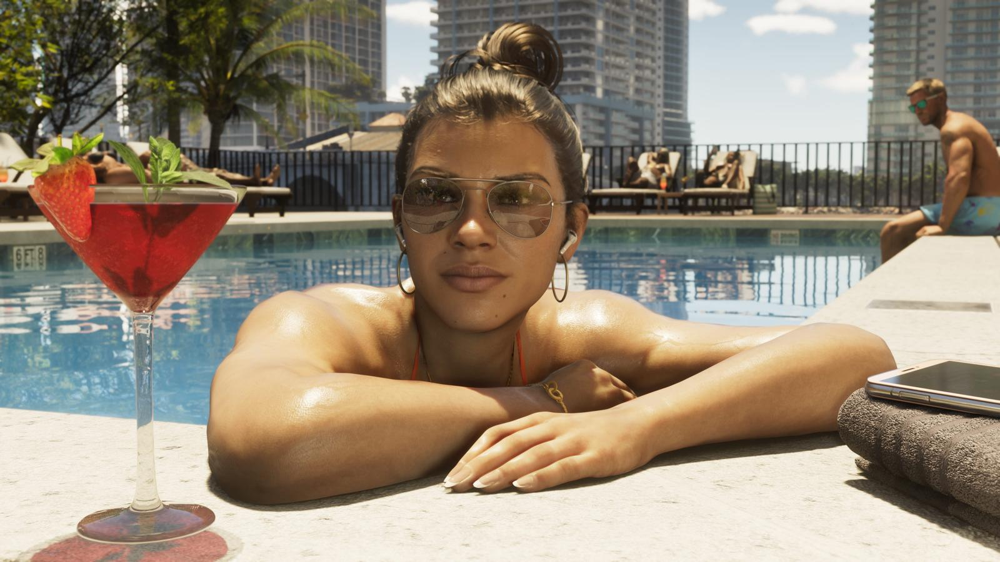
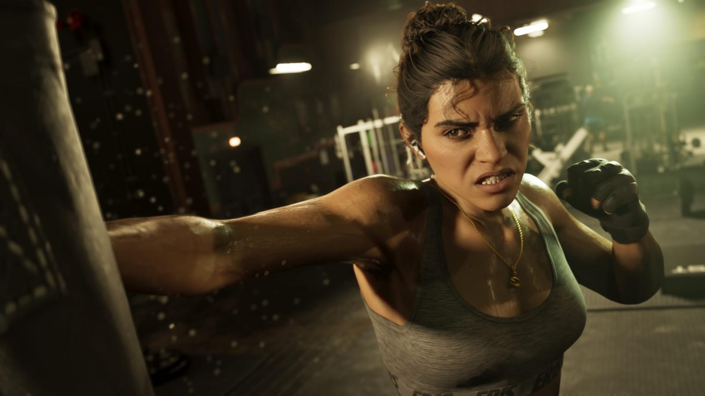
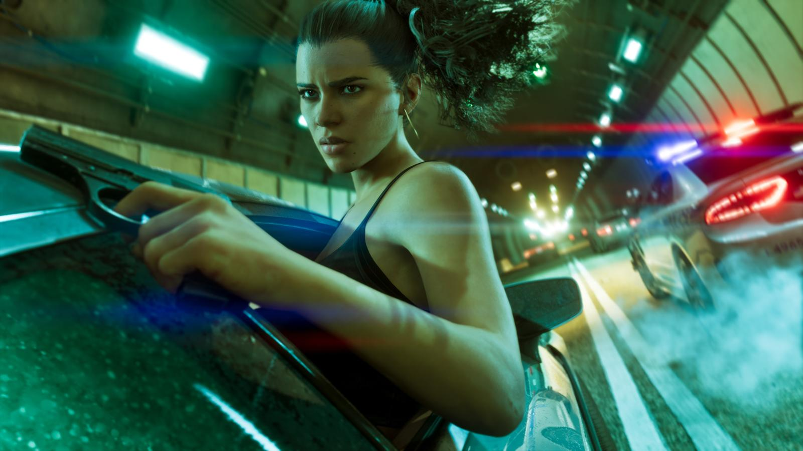
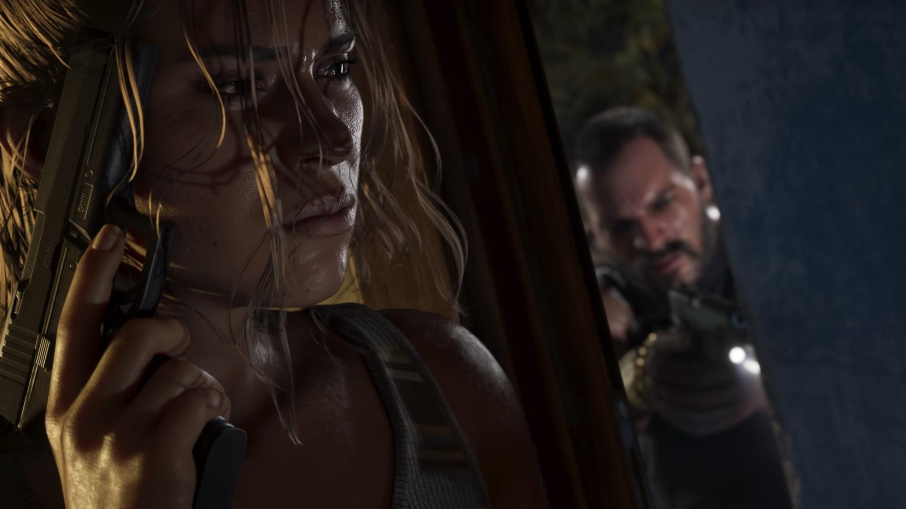

Лусия Каминос — главная героиня GTA 6
Обновлено:

Коротко
- Одна из двух главных героев GTA 6.
- Отец учил её драться с детства.
- Отсидела в тюрьме штата Леонида.
- Хочет той жизни, о которой мечтала её мать.
Содержание
Кто она
Лусия Каминос — первая полноценная главная героиня в современных частях GTA. Она умна, расчётлива и готова взять судьбу в свои руки.
Прошлое
Отец научил Лусию драться, едва она начала ходить. Жизнь сложилась тяжело: она оказалась в исправительном учреждении Леониды. Выйдя на свободу, Лусия решила добиться хорошей жизни, о которой её мать мечтала ещё со времён Либерти-Сити.

Лусия и Джейсон
Лусия и Джейсон — пара и напарники. Их отношения — центр сюжета, а игрок может переключаться между ними в любой момент. О Джейсоне — Джейсон Дюваль — главный герой GTA 6.

Галерея


Источники: Rockstar Games — официальный сайт GTA VI (rockstargames.com/VI), Rockstar Newswire.